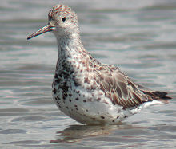
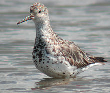

| Great Knot | |
|---|---|
|  | |
| Conservation status | |
| Binomial name | |
| Calidris tenuirostris Horsfield, 1821 |
| Great Knot | |
|---|---|
|  | |
| Conservation status | |
| Binomial name | |
| Calidris tenuirostris Horsfield, 1821 |
The Great Knot, Calidris tenuirostris, is a small wader. It is the largest of the calidrid species.
Their breeding habitat is tundra in northeast Siberia. They nest on the ground laying about four eggs in a ground scrape. They are strongly migratory wintering on coasts in southern Asia through to Australia. This species forms enormous flocks in winter. It is a rare vagrant to western Europe.
This species has short dark legs and a medium-length thin dark bill. Breeding adults have mottled greyish upperparts with some rufous feathering. The face, throat and breast are heavily spotted black, and there are also some streaks on the rear belly. In winter the plumage becomes uniformly pale grey above.
This bird is closely related to the more widespread Red Knot. In breeding plumage, the latter has a distinctive red face, throat and breast. In other plumages, the Great Knot can be identified by its larger size, longer bill, deeper chest, and the more streaked upperparts.
These birds forage on mudflats and beaches, probing or picking up food by sight. They mainly eat molluscs and insects.

{kind=link}